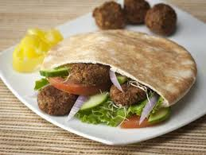
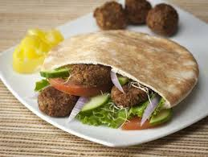

Ссылки на рецепты
Хумус: Пюре из нута с кунжутной пастой (тахини), лимонным соком и специями. Одно из самых известных и любимых блюд, часто подается с питой.
Фалафель: Жареные во фритюре шарики из нута и бобовых, приправленные специями.Подается в пите с хумусом, овощами и соусами.
Шакшука: Блюдо из яиц, тушеных в соусе из томатов, перца и лука, часто приправленное специями. Подается горячим с хлебом.
Баба Гануш: Закуска из запеченных баклажанов, с кунжутной пастой (тахини), чесноком, лимонным соком и специями.
Иерусалимский микс-гриль: Смесь из жареных куриных или мясных субпродуктов (печень, сердце, почки), лука и специй.
Бурекас: Слоеное тесто, фаршированное картофелем, шпинатом, сыром или другими начинками.
Малауах: Тонкий блин из слоеного теста, который часто подают с помидорами, яйцами, тхиной и острым соусом.
Мафрум: Картофель, фаршированный молотым мясом, часто подается с томатным соусом.
Храйме: Рыба (обычно белая рыба, такая как сибас или морской язык), тушеная в остром томатном соусе с добавлением перца чили и специй.
Кугель: Запеканка, приготовленная из тертого картофеля, моркови, лука и других овощей, часто с добавлением яиц и муки.
Цимес: Блюдо из тушеных овощей (чаще всего морковь) и сухофруктов, с добавлением меда и специй.
Гефилте фиш: Фаршированная рыба, обычно карп или щука, популярное блюдо ашкеназской кухни.
Фаршмак: Паштет из сельди, лука, яиц и яблок, популярное блюдо ашкеназской кухни.
Чолнт: Тушеное блюдо из мяса, картофеля, фасоли, лука и других овощей, обычно готовящееся в печи на ночь.
несколько готовых блюд вы видите здесь
 
